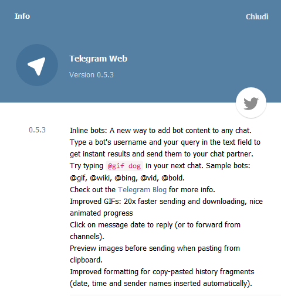
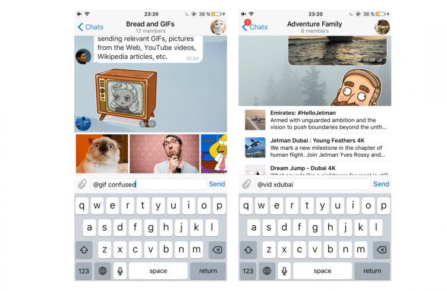

About Telegram Bot API Inline mode
An object oriented developer naming “paranoias”
Today beloved Telegram Instant Messenger released the inline bots feature, now also available for the web interface.

I believe it’s no more necessary to explain what Telegram bots are, and I forward reader to the official Telegram Bot Platform page (and to Bots: An introduction for developers for more tech/dev documentation).
But what inline bots are ? The above mentioned Telegram blog page state:
Bots became an integral part of Telegram for many users, but communication with them wasn’t always easy. You had to send them messages in separate chats or add them to your groups. Today we are introducing a quicker way to contact bots.
With the new inline mode, bots become omnipresent and can be used as a tool in any of your chats, groups or channels — it doesn’t matter, whether the bot is a member or not. Inline bots can help you with dozens of different tasks, like quickly sending relevant GIFs, pictures from the Web, YouTube videos, Wikipedia articles, etc.

Here I report few considerations and thoughts about a possible inline mode usage, already written one month ago, commenting the interesting article, as usual, by Nicola Malizia: Understanding Telegram inline bots. I agree about Nicola’s doubts naming this feature: inline mode.
in computer science, “naming” objects is difficult
Jokes a part, in object oriented programming parlance, I’d consider this inline mode bot API feature something I’d define as:
PUBLIC (methods) QUERIES for an existing bot.
Telegram web docs propose inline mode usage for new kind of bots that can be queried inside person-to-person or groups chats, responding for a simple, unique query goal (examples: @gif, @vid, etc.), and that’s great!
But there is another usage for an already existent bot: inline mode as an optional public query interface; let me explain with an ecommerce use case as example:
Let’s consider an ecommerce bot (where users can chat online with a Telegram bot to purchase some products from a remote seller). Basically a buyer put some prducts on a shopping cart and finally send an order to merchant. This is a typical private session ecommerce workflow: user must “log into” the seller bot (selecting the bot in the telegram messnger app) and start interacting with the bot, so he share personal data to submit orders, etc.
Nevertheless the shop product catalog is by example something “almost” public (user profiling scenarios a part).
Inline queries are perfect to just know if a product is available in catalog, or of the shop could deliver in a specifict time framework. In the case of an hypotetical shop bot that send orders to a pizza maker (@PIZZASHOPbot), a possible inline query could be:
@PIZZASHOP timetable
to get the shop opening/delivery times or:
@PIZZASHOP pizza veg
to query the availability of product list (in this case a subquery like: give me all vegeterian pizzas list). Generally speaking:
inline mode is perfect for queries about public or not-personal services info
Then inline mode could be also called query mode, but I understand that Telegram need to communicate to users the immediacy to use bots apps inside p2p/groups chats, so all in all: inline mode naming is the right strategic decision.
But again, my own is just a naming rant. The important fact is that Telegram bots are going a step forward in man-machines integration services!
See also my visions about humans-bots mixin services: